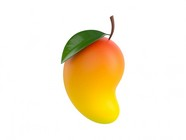

|  | A Mango is a juicy stone fruit (drupe) produced from numerous species of tropical trees belonging to the flowering plant genus Mangifera, cultivated mostly for their edible fruit. Most of these species are found in nature as wild mangoes. The genus belongs to the cashew family Anacardiaceae. Mangoes are native to South Asia, from where the "common mango" or "Indian mango", Mangifera indica, has been distributed worldwide to become one of the most widely cultivated fruits in the tropics. Other Mangifera species (e.g. horse mango, Mangifera foetida) are grown on a more localized basis. Worldwide, there are several hundred cultivars of mango. Depending on the cultivar, mango fruit varies in size, shape, sweetness, skin color, and flesh color which may be pale yellow, gold, or orange. Mango is the national fruit of India and Pakistan, and the national tree of Bangladesh. It is the unofficial national fruit of the Philippines |